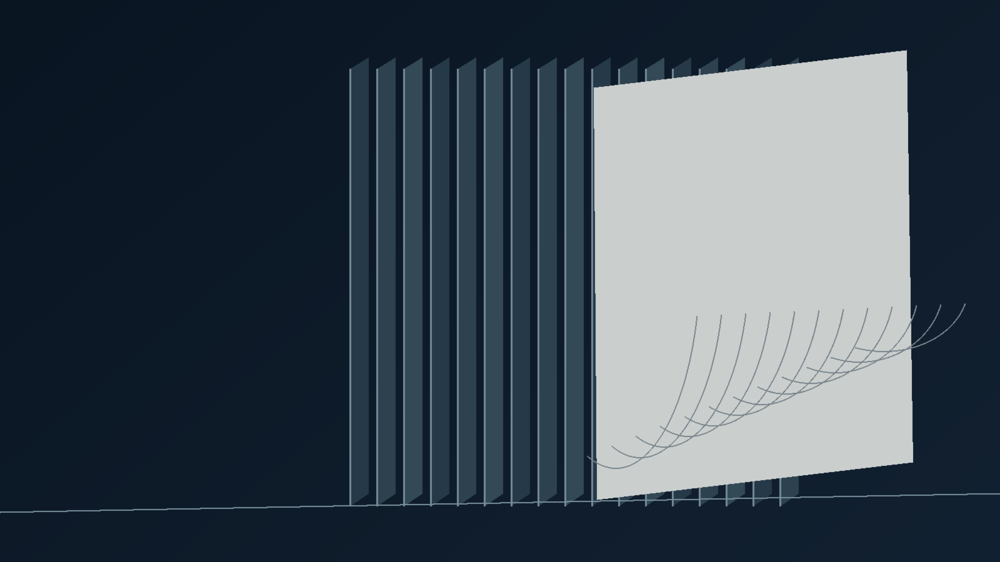

Decorative wall panels
Give a plain wall rhythm, depth and a new point of view.
01 / ANATOMY OF A SURFACE
Scroll to explore the layers behind an expressive interior.
02 / THE REVEAL
From the backing to the decorative finish, watch the assembly separate in space.
THE MATERIAL EDIT
Explore the surfaces behind a more expressive interior. Visit our Kolkata showroom to see available designs and finishes in person.

Conceptual material visualizationGive a plain wall rhythm, depth and a new point of view.
The visual impact of stone-inspired surfaces for statement interiors.
Explore textures and decorative materials for your next space.
From a single feature wall to a larger interior refresh, choosing the right surface begins with seeing the material up close.
Explore our location ↗